01 — The Archive
History records
the event.
The Archive preserves the choice.
Not a place. Not a vault. Not a machine. The Archive is the silent layer of reality that preserves the weight of human choices—stories history never recorded, but consequences never forgot.18Unread symbols
7Intersecting lives
∞Ages without borders
02 — Across the Ages
The event is the stage.
The shadow is the story.
No borders of time or place—only borders of causality. Every known event contains an unseen human space.
OriginsBefore the record
AntiquityFoundations
EmpiresRise and fracture
RevolutionsChoice under pressure
ModernityThe remembered world
BeyondShadows still forming
03 — The Eighteen
They were found.
They were not understood.
The symbols do not speak. They do not choose. Their meanings remain beyond the evidence—and beyond the witness.
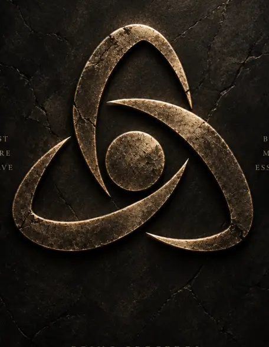
GLYPH 01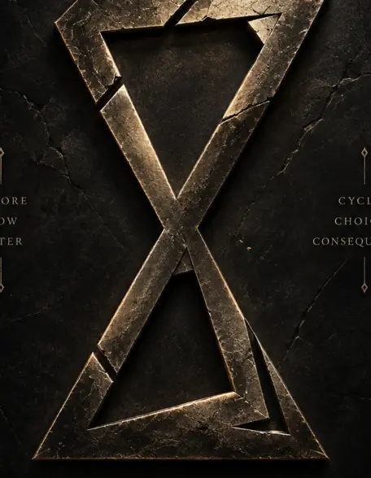
GLYPH 02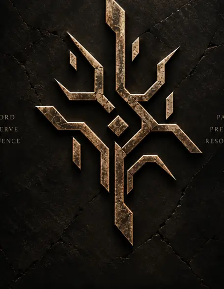
GLYPH 03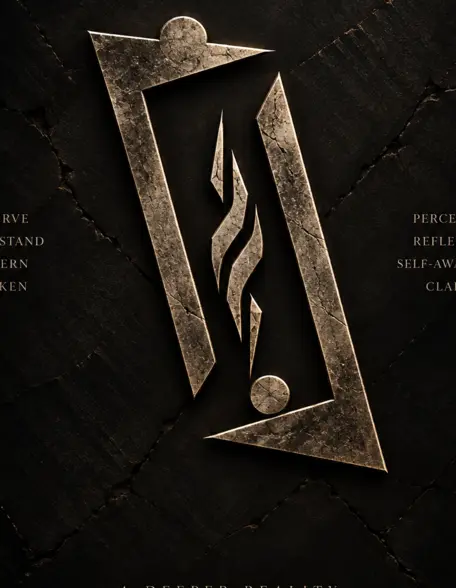
GLYPH 04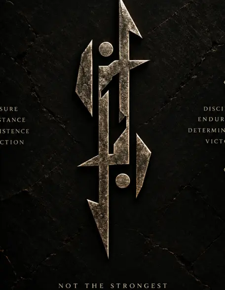
GLYPH 05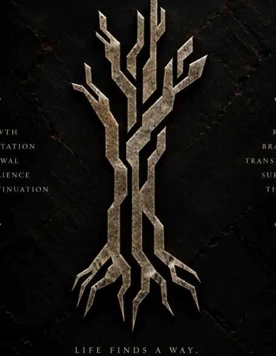
GLYPH 06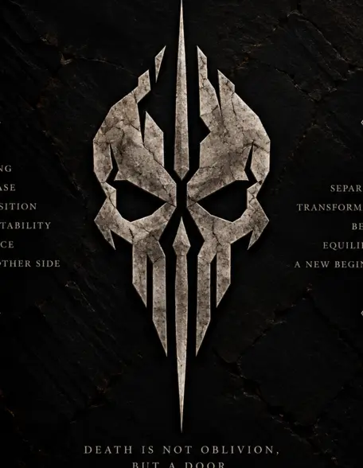
GLYPH 07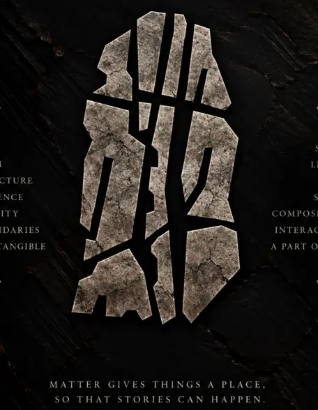
GLYPH 08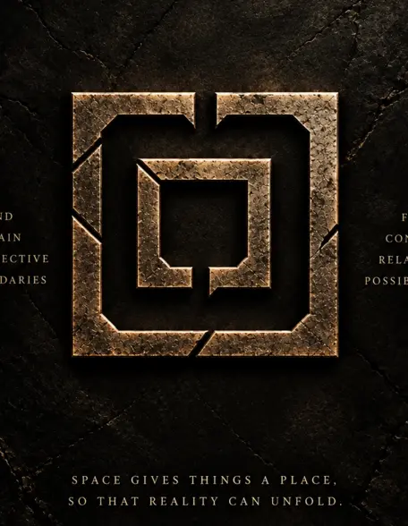
GLYPH 09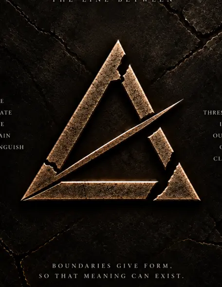
GLYPH 10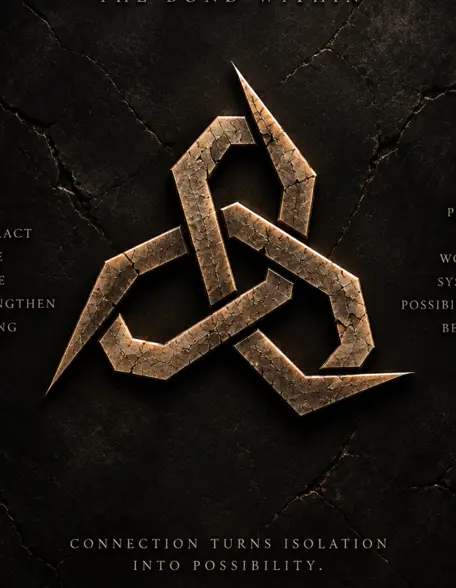
GLYPH 11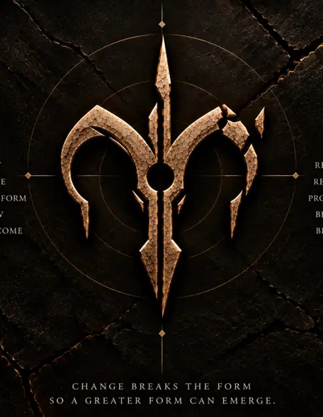
GLYPH 12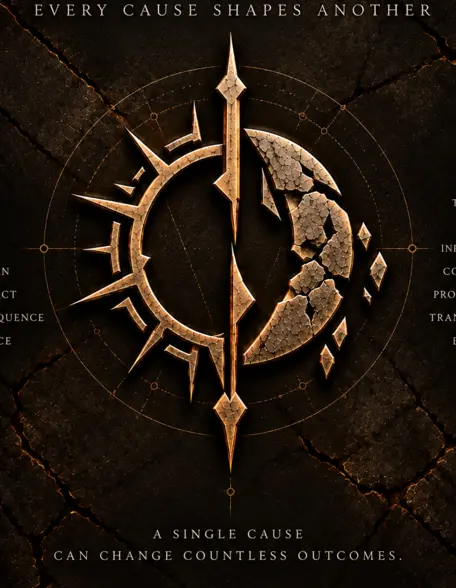
GLYPH 13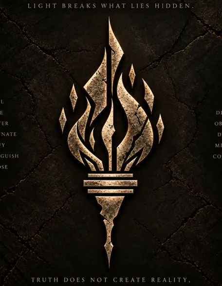
GLYPH 14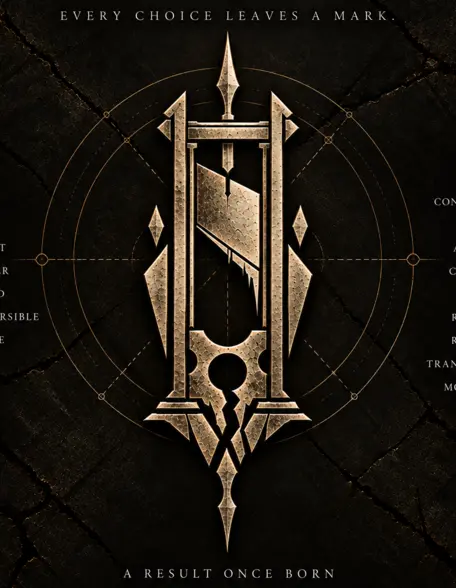
GLYPH 15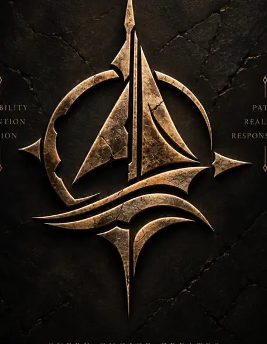
GLYPH 16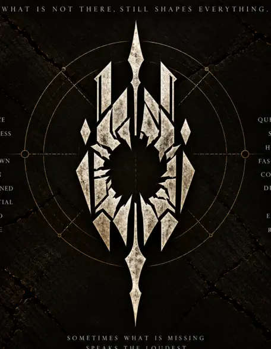
GLYPH 17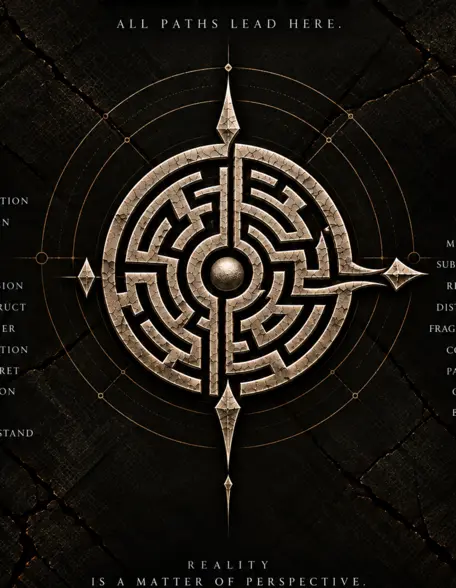
GLYPH 1804 — The Ensemble
Before they met,
their choices had.
Seven lives. Separate paths. A hidden chain of consequences already moving between them.
ELAFJournalist
KARANEngineer
SELINHumanitarian
NIRAVeterinarian
TAYMHistorian
TURANField security
ZAYANProvenance expert
The first fracture is knowledge
Once you have seen the shadow,
you cannot return unchanged.
The past does not change the present directly. It changes the human being—and the human being changes the present.
© 2026 NOVAFRAX STUDIOS. All rights reserved.